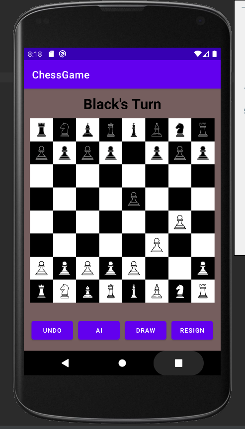
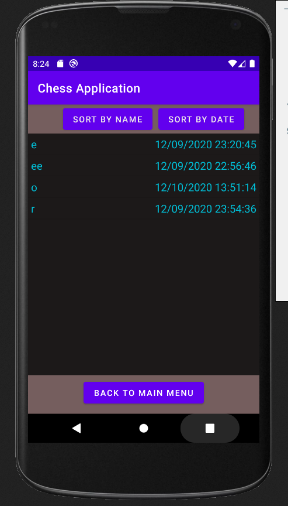
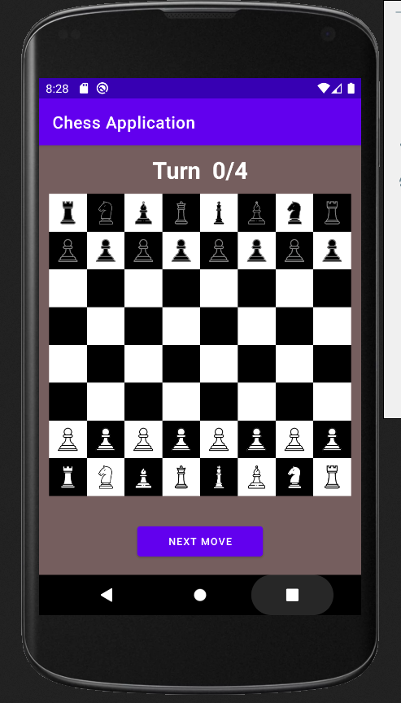

On this page there is chess, which has been made as an android app.

It fully implements the game of chess as an app, runnable on any android device using android 10 or higher. The player has the option to undo their last move, have the ai move for them, offer/accept a draw, and to resign.
After the game has ended, the user has the option to save a replay of the game.

A list of replays can be seen from the main menu, sorted by either name or date.
A user can view a saved replay turn by turn.

This project can be downloaded here.